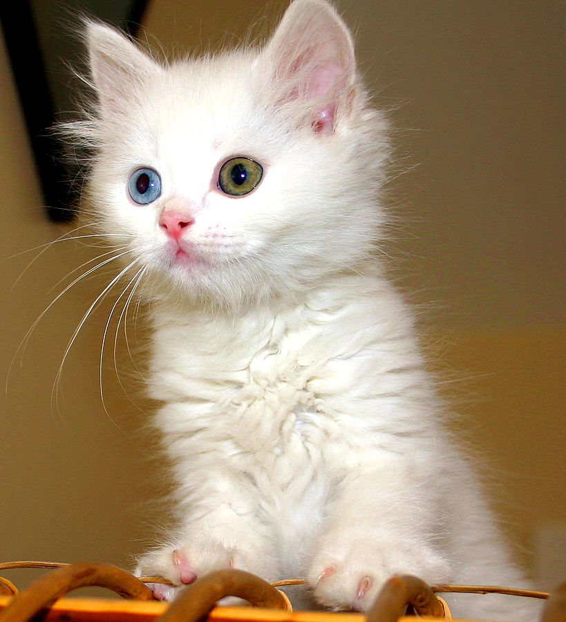

 Kucing disebut juga kucing domestik[4][5] atau kucing rumah (nama ilmiah: Felis silvestris catus atau Felis catus) adalah sejenis mamalia karnivora dari keluarga Felidae. Kata "kucing" biasanya merujuk kepada "kucing" yang telah dijinakkan, [6] tetapi bisa juga merujuk kepada "kucing besar" seperti singa dan harimau. Kucing telah berbaur dengan kehidupan manusia paling tidak sejak 6.000 tahun SM, dari kerangka kucing di Pulau Siprus.[7] Orang Mesir Kuno dari 3.500 SM telah menggunakan kucing untuk menjauhkan tikus atau hewan pengerat lain dari lumbung yang menyimpan hasil panen.[8]